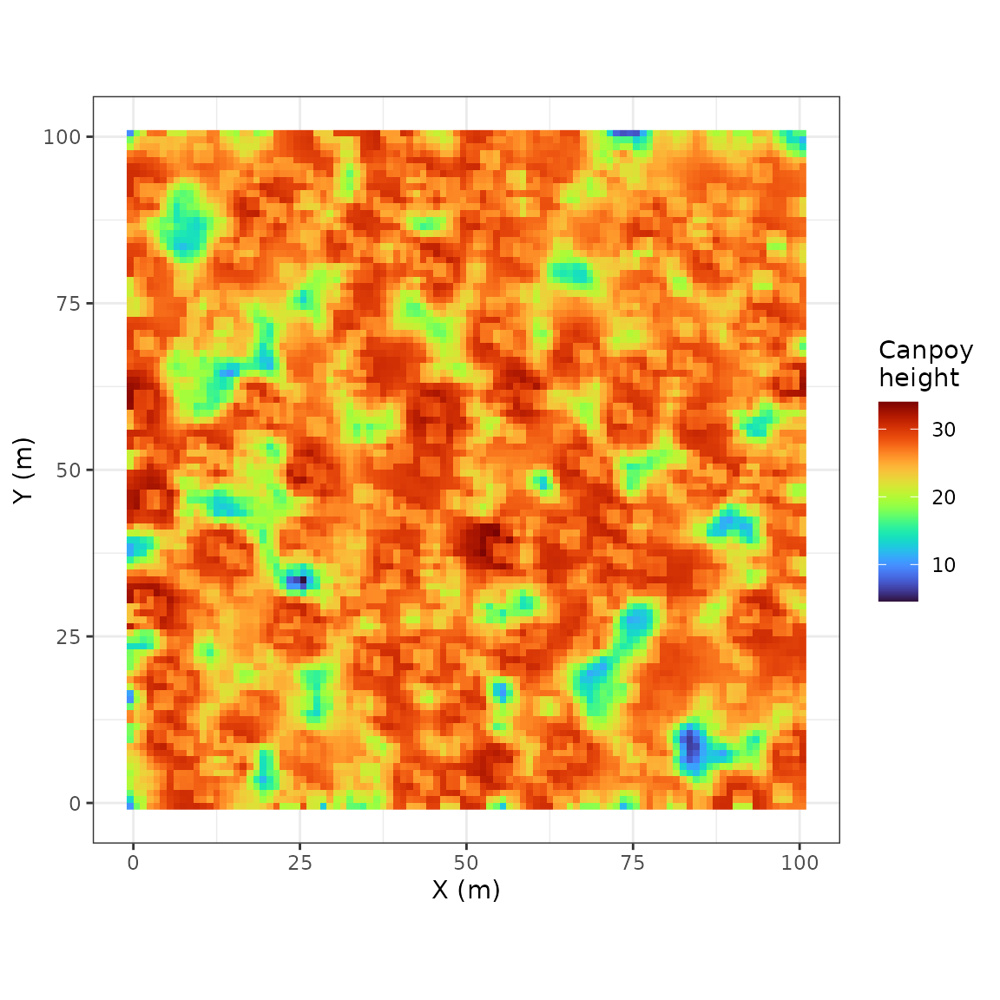
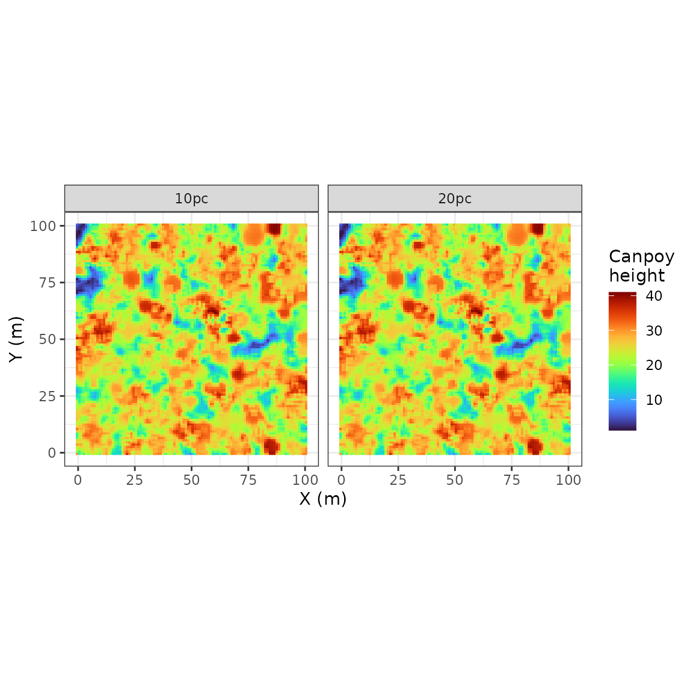

This vignette gives a quick example of a simple workflow to produce discrete lidar point clouds from TROLL simulation and corresponding height canopy models.
We will use rcontroll with a previous simulation
(TROLLv3_output) as a starting point for new
simulations.
suppressMessages(library(rcontroll))
data("TROLLv3_output")The troll function include a lidar input to
specify the details of the lidar simulation that can be easily generated
using the generate_lidar function. Parameters for the lidar
simulation includes mean and standard deviation of pulse density, the
laser attenuation factor, the transmittance of laser after hit, and the
iteration for point cloud generation (see
?generate_lidar).
sim <- troll(
name = "test",
global = update_parameters(TROLLv3_output, nbiter = 12 * 1),
species = TROLLv3_output@inputs$species,
climate = TROLLv3_output@inputs$climate,
daily = TROLLv3_output@inputs$daily,
forest = get_forest(TROLLv3_output),
lidar = generate_lidar(mean_beam_pc = 10, iter_pointcloud_generation = 11),
verbose = FALSE
)Printing the output rcontroll inform the lidar
simulation status:
sim
#> Object of class : trollsim
#> Name : test
#> Path :
#> Extended : TRUE
#> From data : FALSE
#> Lidar simulation : TRUE
#> Random : FALSE
#>
#> 2D discrete network: horizontal step = 1 m, one tree per 1 m^2
#> Number of sites : 100 x 100
#> Number of iterations : 12
#> Duration of timestep : 30.41667 days
#> Number of Species : 45The point cloud can be accessed in a list in the attribute
@las:
sim@las
#> [[1]]
#> class : LAS (v1.2 format 0)
#> memory : 4.9 Mb
#> extent : 0, 100, 0, 100 (xmin, xmax, ymin, ymax)
#> coord. ref. : NA
#> area : 10028 units²
#> points : 142.3 thousand points
#> density : 14.19 points/units²
#> density : 9.55 pulses/units²
lidR::plot(sim@las[[1]])
lidRinclude aplotmethod for las objects with a nice 3D interactive plot.
rcontroll includes a get_chm method to
extract the canopy height model from the point cloud as a raster:
get_chm(sim)
#> $test
#> class : SpatRaster
#> dimensions : 102, 102, 1 (nrow, ncol, nlyr)
#> resolution : 1, 1 (x, y)
#> extent : -1, 101, -1, 101 (xmin, xmax, ymin, ymax)
#> coord. ref. :
#> source(s) : memory
#> name : canopy_height
#> min value : 1.101667
#> max value : 41.005556rcontroll includes in the autoplot method
an automatic plot of the canopy height model when choosing
what = "lidar" (if the lidar simulations as been activated
obviously):
rcontroll::autoplot(sim, what = "lidar")
Prefer to use
rcontroll::autoplotinstead ofautoplotalone to avoid namespace conflict withggplot2.
Similarly, the stack function include a
lidar input to specify the details of the lidar simulation
that can be easily generated using the generate_lidar
function. Here we test the difference between a simulation with mean
pulse density of 10 (10pc) and 20 (20pc):
sim_stack <- stack(
name = "teststack",
simulations = c("10pc", "20pc"),
global = update_parameters(TROLLv3_output, nbiter = 12 * 1),
species = TROLLv3_output@inputs$species,
climate = TROLLv3_output@inputs$climate,
daily = TROLLv3_output@inputs$daily,
forest = get_forest(TROLLv3_output),
lidar = list(
"10pc" = generate_lidar(mean_beam_pc = 10, iter_pointcloud_generation = 11),
"20pc" = generate_lidar(mean_beam_pc = 10, iter_pointcloud_generation = 11)
) %>% dplyr::bind_rows(.id = "simulation"),
verbose = FALSE,
cores = 2,
thin = c(1, 5, 10)
)
#>
|
| | 0%
|
|=================================== | 50%
|
|======================================================================| 100%Printing the output rcontroll inform the lidar
simulation status:
sim_stack
#> Object of class : trollstack
#> Name : 10pc
#> Path : /tmp/RtmpouYwPb/rcontroll/teststack
#> Number of simulations : 2
#> Extended : TRUE
#> From data : FALSE
#> Lidar simulation : TRUE
#> Random : FALSE
#>
#> 2D discrete network: horizontal step = 1 m, one tree per 1 m^2
#> Number of sites : 100 x 100
#> Number of iterations : 12
#> Duration of timestep : 30.41667 days
#> Number of Species : 45The point clouds can be accessed in a list in the attribute
@las:
sim_stack@las
#> $`10pc`
#> class : LAS (v1.2 format 0)
#> memory : 4.9 Mb
#> extent : 0, 100, 0, 100 (xmin, xmax, ymin, ymax)
#> coord. ref. : NA
#> area : 10028 units²
#> points : 142.3 thousand points
#> density : 14.19 points/units²
#> density : 9.55 pulses/units²
#>
#> $`20pc`
#> class : LAS (v1.2 format 0)
#> memory : 4.9 Mb
#> extent : 0, 100, 0, 100 (xmin, xmax, ymin, ymax)
#> coord. ref. : NA
#> area : 10028 units²
#> points : 142.3 thousand points
#> density : 14.19 points/units²
#> density : 9.55 pulses/units²
lidR::plot(sim_stack@las[[2]])rcontroll includes a get_chm method to
extract the canopy height model from the point clouds as a raster:
get_chm(sim_stack)
#> $`10pc`
#> class : SpatRaster
#> dimensions : 102, 102, 1 (nrow, ncol, nlyr)
#> resolution : 1, 1 (x, y)
#> extent : -1, 101, -1, 101 (xmin, xmax, ymin, ymax)
#> coord. ref. :
#> source(s) : memory
#> name : canopy_height
#> min value : 1.101667
#> max value : 41.005556
#>
#> $`20pc`
#> class : SpatRaster
#> dimensions : 102, 102, 1 (nrow, ncol, nlyr)
#> resolution : 1, 1 (x, y)
#> extent : -1, 101, -1, 101 (xmin, xmax, ymin, ymax)
#> coord. ref. :
#> source(s) : memory
#> name : canopy_height
#> min value : 1.101667
#> max value : 41.005556rcontroll includes in the autoplot method
an automatic plot of the canopy height model when choosing
what = "lidar" (if the lidar simulations as been activated
obviously):
rcontroll::autoplot(sim_stack, what = "lidar")